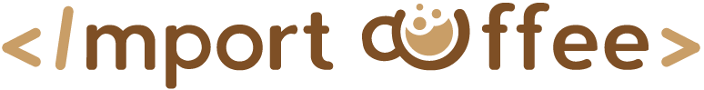

¡Accede a nuestro contenido!
En esta sección encontraras enlaces para acceder a nuestro contenido alojado en Google Drive/Mega,
Github, Kaggle, Youtube y... !Mucho mas¡. Dentro de los enlaces podrás encontrar: tutoriales, guías, scripts,
programas, algunas competiciones de kaggle resueltas por nosotros, contenido de talleres pasados y futuros, etc...
Además de todo lo anterior, en un futuro próximo también podrás acceder a los datos de nuestros proyectos
(estaciones meteorológicas), sensores, bases de datos, etc... Por no olvides visitar esta sección de la web :D .
En lo que a los enlaces respecta, tenemos:
- GitHub:
- Mega:
- Google Drive: